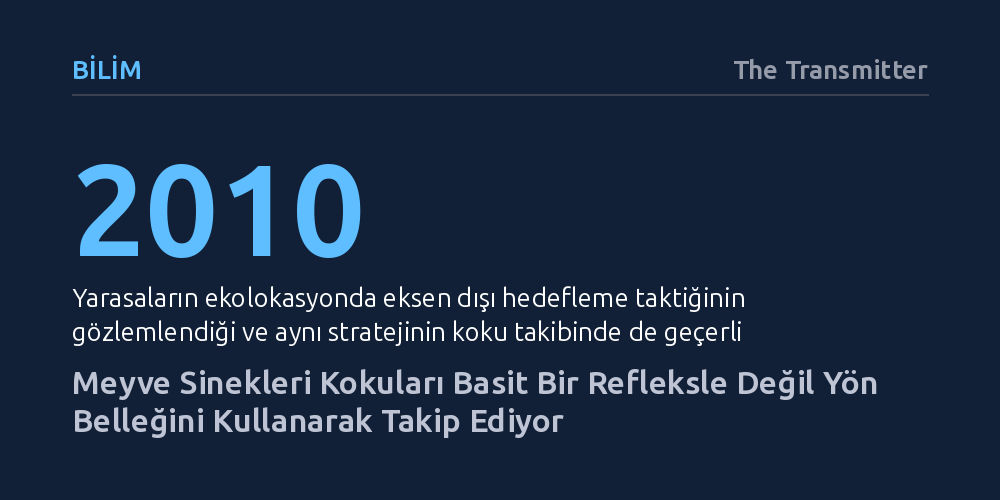

BILIM · The Transmitter · 2026-09-09
Meyve sinekleri koku izini en yoğun merkezden değil, farkların keskin olduğu kenarlardan zikzaklar çizerek izliyor. İzi kaybettiklerinde ise basit bir refleksle değil, beyinlerindeki merkezi komplekste saklanan açısal yön belleğiyle rotalarına dönüyorlar.
Böceklerin koku takibi gibi temel hayatta kalma davranışlarının otomatik reflekslerden ibaret olmadığını, yön belleğine dayalı gelişmiş bir seyrüsefer hesabı içerdiğini gösteriyor.

Yarasalar ses dalgalarıyla yön bulurken (ekolokasyon) sonarlarını doğrudan hedefin tam ortasına yöneltmezler. İlk bakışta hedefin merkezine odaklanmak en güçlü sinyali verse de yarasalar ses demetini hedefin hafifçe eksen dışına kaydırır. Böylece geri dönen yankıdaki sinyal farkları çok daha belirgin ve keskin hale gelir. 2010 yılında yarasalarda gözlemlenen bu stratejinin koku takibinde de geçerli olabileceği öngörülmüştü.
Nature dergisinde yayımlanan yeni bir araştırma, bu öngörünün doğruluğunu ortaya koydu. Meyve sinekleri elma sirkesi kokusu aldıklarında, kokunun en yoğun ve durağan olduğu koku bulutunun merkezinden ilerlemek yerine, yoğunluk farkının en keskin olduğu kenar hatları boyunca zikzak çiziyor. Bu zikzaklar, sineklerin koku sınırındaki kontrastı kullanarak hedefe çok daha kararlı yaklaşmasını sağlıyor.
Bilim dünyasında uzun süredir böceklerin koku takibinin son derece mekanik bir refleksen ibaret olduğu düşünülüyordu. Klasik kabule göre sinekler koku aldıklarında rüzgara karşı hızla ilerliyor, kokuyu kaybettiklerinde ise izi yeniden yakalamak için sağa sola savruluyordu. Araştırmada yer almayan biyolog Matthieu Louis'nin de belirttiği gibi, bu savrulmalar dışarıdan bakıldığında tamamen otomatik bir tepki gibi görünüyordu.
Ancak yeni bulgular, koku izini kaybetme anının sanılandan çok daha karmaşık olduğunu gösteriyor. Meyve sinekleri koku hattından çıktıklarında rastgele savrulmuyor; kokunun bulunduğu hatta geri dönebilmek için takip etmeleri gereken açıyı hafızalarında tutabiliyorlar. Yani koku kaybolduğunda sergilenen yön bulma davranışı basit bir refleks değil, hafızaya kaydedilmiş bir açısal yön düzeltmesidir.
Gelişmiş görüntüleme deneyleri, bu yön belleğinin sinek beyninin neresinde işlendiğini somut bir şekilde ortaya koydu. Belleğin oluşumuna ve saklanmasına, sinek beyninin yön bulma merkezi olarak bilinen "merkezi kompleks" (central complex) bölgesindeki nöronlar doğrudan katkı sağlıyor.
Bu bulgu, milimetrik boyutlardaki bir böcek beyninin dahi uzamsal hafıza ve yön tayini gibi ileri düzey hesaplamaları eş zamanlı yürütebildiğini kanıtlıyor. Kokunun anlık algısı, merkezi kompleksteki yön belleğiyle harmanlanarak küçük canlılara son derece gelişmiş bir yön bulma kabiliyeti kazandırıyor.